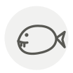

Denté
Dentex
| Nom latin | Dentex dentex |
|---|---|
| Famille | Poissons & fruits de mer |
| Origine | Méditerranée & Adriatique |
| Saison | mai – septembre |
| Goût | Sucré · Délicat · Iodé · Riche |
| Prix courant | 22–40 €/kg |
Ce que c’est
Il doit son nom à ses dents : quatre grandes canines à l’avant de chaque mâchoire, l’outillage d’un chasseur qui poursuit le poisson au lieu de brouter le fond comme la daurade qu’il rappelle. Il commencerait sa vie femelle et deviendrait mâle en grandissant : les gros sujets de l’étal sont donc presque tous des mâles.
En cuisine
La chair est assez ferme pour la croûte de sel : entier dans du gros sel humidifié, à 200 °C, environ douze minutes par 500 g, puis cassez la croûte et enlevez la peau avec elle. En dessous du kilo, préférez le gril — la croûte a besoin de masse pour fonctionner.
S’accorde avec
Fenouil Citron Huile d’olive Thym Sel Tomate Olive taggiasche Pomme de terre
De saison en même temps
Barbue Omble chevalier Écrevisse Sériole couronnée (kanpachi) Homard Langouste rouge
Une erreur ici, ou un oubli ? Dites-le nous